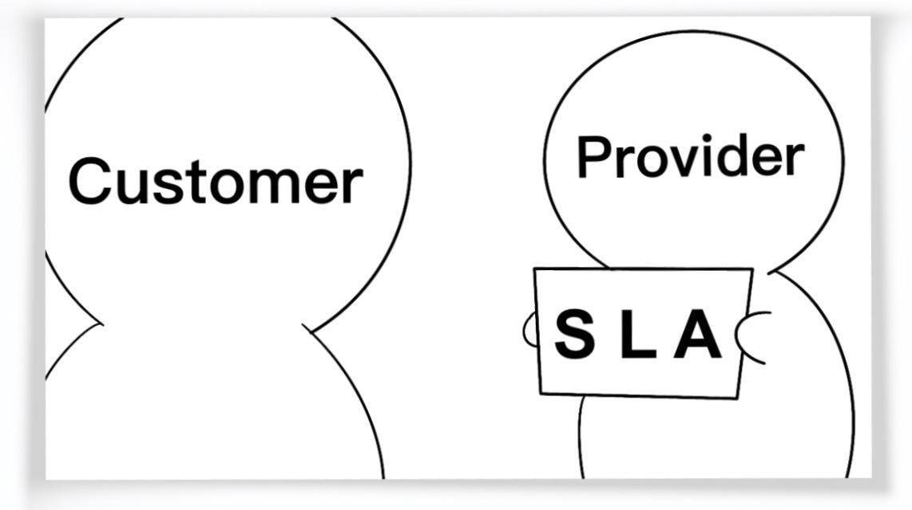

- 00 开篇词 从这里开始，带你走上硅谷一线系统架构师之路.md.html
- 01 为什么MapReduce会被硅谷一线公司淘汰？.md.html
- 02 MapReduce后谁主沉浮：怎样设计下一代数据处理技术？.md.html
- 03 大规模数据处理初体验：怎样实现大型电商热销榜？.md.html
- 04 分布式系统（上）：学会用服务等级协议SLA来评估你的系统.md.html
- 05 分布式系统（下）：架构师不得不知的三大指标.md.html
- 06 如何区分批处理还是流处理？.md.html
- 07 Workflow设计模式：让你在大规模数据世界中君临天下.md.html
- 08 发布_订阅模式：流处理架构中的瑞士军刀.md.html
- 09 CAP定理：三选二，架构师必须学会的取舍.md.html
- 10 Lambda架构：Twitter亿级实时数据分析架构背后的倚天剑.md.html
- 11 Kappa架构：利用Kafka锻造的屠龙刀.md.html
- 12 我们为什么需要Spark？.md.html
- 13 弹性分布式数据集：Spark大厦的地基（上）.md.html
- 14 弹性分布式数据集：Spark大厦的地基（下）.md.html
- 15 Spark SQL：Spark数据查询的利器.md.html
- 16 Spark Streaming：Spark的实时流计算API.md.html
- 17 Structured Streaming：如何用DataFrame API进行实时数据分析_.md.html
- 18 Word Count：从零开始运行你的第一个Spark应用.md.html
- 19 综合案例实战：处理加州房屋信息，构建线性回归模型.md.html
- 20 流处理案例实战：分析纽约市出租车载客信息.md.html
- 21 深入对比Spark与Flink：帮你系统设计两开花.md.html
- 22 Apache Beam的前世今生.md.html
- 23 站在Google的肩膀上学习Beam编程模型.md.html
- 24 PCollection：为什么Beam要如此抽象封装数据？.md.html
- 25 Transform：Beam数据转换操作的抽象方法.md.html
- 26 Pipeline：Beam如何抽象多步骤的数据流水线？.md.html
- 27 Pipeline I_O_ Beam数据中转的设计模式.md.html
- 28 如何设计创建好一个Beam Pipeline？.md.html
- 29 如何测试Beam Pipeline？.md.html
- 30 Apache Beam实战冲刺：Beam如何run everywhere_.md.html
- 31 WordCount Beam Pipeline实战.md.html
- 32 Beam Window：打通流处理的任督二脉.md.html
- 33 横看成岭侧成峰：再战Streaming WordCount.md.html
- 34 Amazon热销榜Beam Pipeline实战.md.html
- 35 Facebook游戏实时流处理Beam Pipeline实战（上）.md.html
- 36 Facebook游戏实时流处理Beam Pipeline实战（下）.md.html
- 37 5G时代，如何处理超大规模物联网数据.md.html
- 38 大规模数据处理在深度学习中如何应用？.md.html
- 39 从SQL到Streaming SQL：突破静态数据查询的次元.md.html
- 40 大规模数据处理未来之路.md.html
- FAQ第一期 学习大规模数据处理需要什么基础？.md.html
- FAQ第三期 Apache Beam基础答疑.md.html
- FAQ第二期 Spark案例实战答疑.md.html
- 加油站 Practice makes perfect！.md.html
- 结束语 世间所有的相遇，都是久别重逢.md.html
- 捐赠
04 分布式系统（上）：学会用服务等级协议SLA来评估你的系统
你好，我是蔡元楠。
从今天开始，我们进入专栏的第二模块。通过这一模块的学习，带你一起夯实大规模数据处理的基础。
首先，我将结合硅谷顶尖科技公司的最佳实践 (Best Practice) ，和你一起分享在设计分布式系统架构时，我们有可能会碰到哪些雷区？又有哪些必备的基础知识？
在硅谷一线大厂所维护的系统服务中，我们经常可以看见SLA这样的承诺。
例如，在谷歌的云计算服务平台Google Cloud Platform中，他们会写着“99.9% Availability”这样的承诺。那什么是“99.9% Availability”呢？
要理解这个承诺是什么意思，首先，你需要了解到底什么是SLA？
SLA（Service-Level Agreement），也就是服务等级协议，指的是系统服务提供者（Provider）对客户（Customer）的一个服务承诺。这是衡量一个大型分布式系统是否“健康”的常见方法。

在开发设计系统服务的时候，无论面对的客户是公司外部的个人、商业用户，还是公司内的不同业务部门，我们都应该对自己所设计的系统服务有一个定义好的SLA。
因为SLA是一种服务承诺，所以指标可以多种多样。根据我的实践经验，给你介绍最常见的四个SLA指标，可用性、准确性、系统容量和延迟。
1. 可用性（Availabilty）
可用性指的是系统服务能正常运行所占的时间百分比。
如果我们搭建了一个拥有“100％可用性”的系统服务，那就意味着这个系统在任何时候都能正常运行。是不是很完美？但真要实现这样的目标其实非常困难，并且成本也会很高。
我们知道，即便是大名鼎鼎的亚马逊AWS云计算服务这样大型的、对用户来说极为关键的系统，也不能承诺100％的可用性，它的系统服务从推出到现在，也有过服务中断（Service Outage）的时候。
对于许多系统而言，四个9的可用性（99.99％ Availability，或每年约50分钟的系统中断时间）即可以被认为是高可用性（High availability）。
说到这里，我来为你揭开一开始所提到的“99.9% Availability”的真实含义。
“99.9% Availability”指的是一天当中系统服务将会有大约86秒的服务间断期。服务间断也许是因为系统维护，也有可能是因为系统在更新升级系统服务。
86秒这个数字是怎么算出来的呢？
99.9%意味着有0.1%的可能性系统服务会被中断，而一天中有24小时 × 60分钟 × 60秒，也就是有(24 × 60 × 60 × 0.001) = 86.4秒的可能系统服务被中断了。而上面所说的四个9的高可用性服务就是承诺可以将一天当中的服务中断时间缩短到只有(24 × 60 × 60 × 0.0001) = 8.64秒。
2. 准确性（Accuracy）
准确性指的是我们所设计的系统服务中，是否允许某些数据是不准确的或者是丢失了的。如果允许这样的情况发生，用户可以接受的概率（百分比）是多少？
这该怎么衡量呢？不同的系统平台可能会用不同的指标去定义准确性。很多时候，系统架构会以错误率（Error Rate）来定义这一项SLA。
怎么计算错误率呢？可以用导致系统产生内部错误（Internal Error）的有效请求数，除以这期间的有效请求总数。
例如，我们在一分钟内发送100个有效请求到系统中，其中有5个请求导致系统返回内部错误，那我们可以说这一分钟系统的错误率是 5 / 100 = 5%。
下面，我想带你看看硅谷一线公司所搭建的架构平台的准确性SLA。
Google Cloud Platform的SLA中，有着这样的准确性定义：每个月系统的错误率超过5%的时间要少于0.1%，以每分钟为单位来计算。
而亚马逊AWS云计算平台有着稍微不一样的准确性定义：以每5分钟为单位，错误率不会超过0.1%。
你看，我们可以用错误率来定义准确性，但具体该如何评估系统的准确性呢？一般来说，我们可以采用性能测试（Performance Test）或者是查看系统日志（Log）两种方法来评估。
具体的做法我会在后面展开讲解，今天你先理解这项指标就可以了。
3. 系统容量（Capacity）
在数据处理中，系统容量通常指的是系统能够支持的预期负载量是多少，一般会以每秒的请求数为单位来表示。
我们常常可以看见，某个系统的架构可以处理的QPS （Queries Per Second）是多少又或者RPS（Requests Per Second）是多少。这里的QPS或者是RPS就是指系统每秒可以响应多少请求数。
我们来看看之前Twitter发布的一项数据，Twitter系统可以响应30万的QPS来读取Twitter Timelines。这里Twitter系统给出的就是他们对于系统容量（Capacity）的SLA。
你可能会问，我要怎么给自己设计的系统架构定义出准确的QPS呢？以我的经验看，可以有下面这几种方式。
第一种，是使用限流（Throttling）的方式。
如果你是使用Java语言进行编程的，就可以使用Google Guava库中的RateLimiter类来定义每秒最多发送多少请求到后台处理。
假设我们在每台服务器都定义了一个每秒最多处理1000个请求的RateLimiter，而我们有N台服务器，在最理想的情况下，我们的QPS可以达到1000 * N。
这里要注意的雷区是，这个请求数并不是设置得越多越好。因为每台服务器的内存有限，过多的请求堆积在服务器中有可能会导致内存溢出（Out-Of-Memory）的异常发生，也就是所有请求所需要占用的内存超过了服务器能提供的内存，从而让整个服务器崩溃。
第二种，是在系统交付前进行性能测试（Performance Test）。
我们可以使用像Apache JMeter又或是LoadRunner这类型的工具对系统进行性能测试。这类工具可以测试出系统在峰值状态下可以应对的QPS是多少。
当然了，这里也是有雷区的。
有的开发者可能使用同一类型的请求参数，导致后台服务器在多数情况下命中缓存（Cache Hit）。这个时候得到的QPS可能并不是真实的QPS。
打个比方，服务器处理请求的正常流程需要查询后台数据库，得到数据库结果后再返回给用户，这个过程平均需要1秒。在第一次拿到数据库结果后，这个数据就会被保存在缓存中，而如果后续的请求都使用同一类型的参数，导致结果不需要从数据库得到，而是直接从缓存中得到，这个过程我们假设只需要0.1秒。那这样，我们所计算出来的QPS就会比正常的高出10倍。所以在生成请求的时候，要格外注意这一点。
第三种，是分析系统在实际使用时产生的日志（Log）。
系统上线使用后，我们可以得到日志文件。一般的日志文件会记录每个时刻产生的请求。我们可以通过系统每天在最繁忙时刻所接收到的请求数，来计算出系统可以承载的QPS。
不过，这种方法不一定可以得到系统可以承载的最大QPS。
在这里打个比喻，一家可以容纳上百桌客人的餐馆刚开业，因为客流量还比较小，在每天最繁忙的时候只接待了10桌客人。那我们可以说这家餐馆最多只能接待10桌客人吗？不可以。
同样的，以分析系统日志的方法计算出来的QPS并不一定是服务器能够承载的最大QPS。想要得到系统能承受的最大QPS，更多的是性能测试和日志分析相结合的手段。
4. 延迟（Latency）
延迟指的是系统在收到用户的请求到响应这个请求之间的时间间隔。
在定义延迟的SLA时，我们常常看到系统的SLA会有p95或者是p99这样的延迟声明。这里的p指的是percentile，也就是百分位的意思。如果说一个系统的p95 延迟是1秒的话，那就表示在100个请求里面有95个请求的响应时间会少于1秒，而剩下的5个请求响应时间会大于1秒。
下面我们用一个具体的例子来说明延迟这项指标在SLA中的重要性。
假设，我们已经设计好了一个社交软件的系统架构。这个社交软件在接收到用户的请求之后，需要读取数据库中的内容返回给用户。
为了降低系统的延迟，我们会将数据库中内容放进缓存（Cache）中，以此来减少数据库的读取时间。在系统运行了一段时间后，我们得到了一些缓存命中率（Cache Hit Ratio）的信息。有90%的请求命中了缓存，而剩下的10%的请求则需要重新从数据库中读取内容。
这时服务器所给我们的p95或者p99延迟恰恰就衡量了系统的最长时间，也就是从数据库中读取内容的时间。作为一个优秀架构师，你可以通过改进缓存策略从而提高缓存命中率，也可以通过优化数据库的Schema或者索引（Index）来降低p95或p99 延迟。
总而言之，当p95或者p99过高时，总会有5%或者1%的用户抱怨产品的用户体验太差，这都是我们要通过优化系统来避免的。
小结
通过今天的内容，你可以发现，定义好一个系统架构的SLA对于一个优秀的架构师来说是必不可少的一项技能，也是一种基本素养。
特别是当系统架构在不停迭代的时候，有了一个明确的SLA，我们可以知道下一代系统架构的改进目标以及优化好的系统架构是否比上一代的系统SLA更加优秀。
我们通常会使用可用性、准确性、系统容量、延迟这四个指标来定义系统架构的SLA。
思考题
你可以思考一下，在自己所在的开发项目中，系统的SLA是什么呢？又有什么方面可以优化的呢？
欢迎你把答案写在留言区，与我和其他同学一起讨论。如果你觉得有所收获，也欢迎把文章分享给你的朋友。
© 2019 - 2023 Liangliang Lee. Powered by gin and hexo-theme-book.